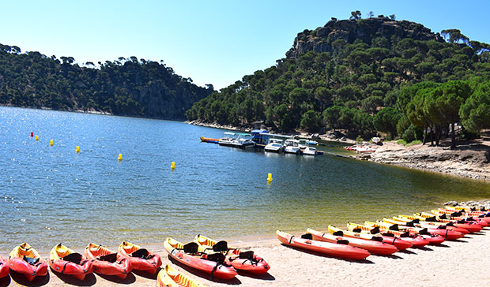

El embalse de San Juan abastece de agua a la zona suroeste de la Comunidad de Madrid, también es utilizado para la generación de energía eléctrica.
Pero su principal atractivo, es la función recreativa y deportiva que proporciona a los madrileños, siendo el único embalse de la Comunidad de Madrid en el que está permitido el baño y las actividades acuáticas a motor.
Pero su principal atractivo, es la función recreativa y deportiva que proporciona a los madrileños, siendo el único embalse de la Comunidad de Madrid en el que está permitido el baño y las actividades acuáticas a motor.
Dispone de más de 10 kilómetros de playa.
Te podrás bañar y difrutar de este entorno magnífico, mira qué lugares tienes para darte un baño increible:
